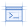
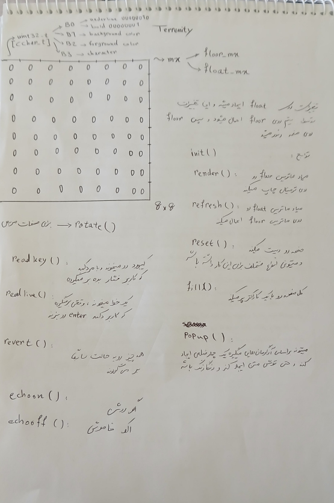
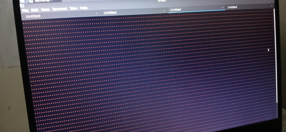
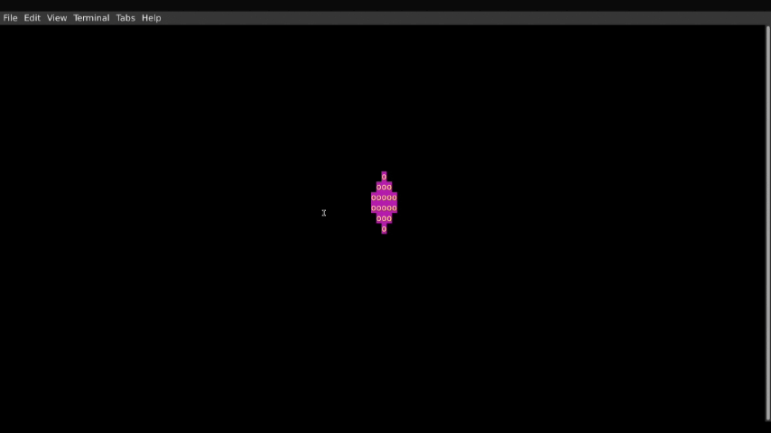
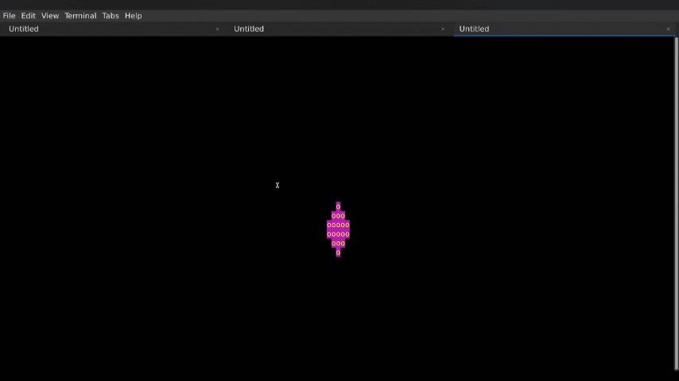
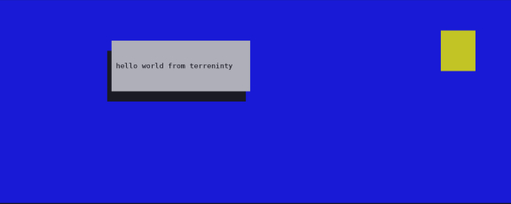

Terrenity Project

Link to headingThe terrenity work is combination of three word terminal, render and simplicity. I wrote this library because I had an idea :
What if we consider each terminal character cell as a pixel?
If we consider each terminal character cell as pixel, we have a matrix-display instead of terminal which with specific command we can clear the screen, change color of a pixel and other adjustments exactly like a real display like ssd1306 display module.
First Scheme Link to heading

The main core of terrenity consists of two matrixes : floor_mx and float_mx.
The floor_mx is the last buffer before rendering and whatever is in this matrix is gonna write on the stdout.
Each item of these matrixes is a pixel_t structure as below :
typedef struct {
uint8_t ulbd;
uint8_t bgnd;
uint8_t fgnd;
uint8_t cval;
} pixel_t;
if ulbd value equals to 4, enables underline for character in the pixel and value 1 enables bold.
bgnd is for background color and fgnd is for foreground color.
The cval is for char value.
All supported colors has been defined in this header.
So, based on the schematic, I started to write the functions; the mx_fill() function was one of them that fills entire screen with just one pixel_t and the picture below is the first time I have tested it.

And if I’m being honest, it felt great.
First Moving Object Link to heading
After completing basic tests to test functions, I started to write more complicated tests such as moving a shape on the screen. The result was this :

Moving shape worked fine but there was a huge issue : flicker.
The problem appeared in mx_render() function and specially in render_matrix() static function.
The Problem was obvious, I was using the write() syscall for each pixel in floor_mx matrix which means to render single frame in a 24*96 terminal, the library was calling the write() 2304 times which means for a 24fps game the library would call write() 55296 times.
This is extremely inefficient, therefore, I decided to use a buffer to copy entire floor_mx in it and use only one write() syscall to write the whole buffer into the stdout.
The result was this :

The flicker faded just because of using row * col bytes more of the memory which shows importance of the memory to programmers.
Shadowed Message Box Link to heading
Creating Message Boxes with shadow was my next test. The result was this :

New Ideas Link to heading
- Add
draw_circle()function, the library already have functions to draw rectangle and rhombus but circle is the next step. My idea to draw a circle based on the circle equation which is x^2^ + y^2^ = R^2^. - Add
draw_message_box()function. - Extend the terrenity to 3D Rendering.
Last Words Link to heading
Working on this library was one of my best times and its code is one of the cleanest and most carefully code I’ve ever written. Also I have to complete its documentation which is exhausting :(